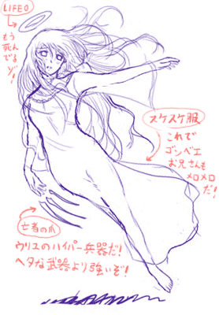

シルバーセカンド開発日誌
2008年05月
■
2008-05-31 (土) ウディタLvアップ！(予定)▼
すうさんから、MIDI機能充実なDLLの情報を教えてもらったおかげで、
MIDI音源のループの仕様や再生の安定性が、
RPGツクールXP用まで向上できそうなことが判明しました。
探せば便利なのも転がってるもんですね！
でも、そこにあるのに気付けない。
まるで都会から見た夜星のようです。
かーぜーのなーかーのすーばるー。おっとこれは地上の星。
何はともあれ、MIDI機能に関してはツクール並みになりそうなので
「ウディタのMIDI再生がヘボすぎるよーうわーん」
という人もこれで安心！
次回バージョナップをご期待下さいッ！！！！！！
ついでに、MIDI、OGGともに、再生中に音量を変更したり
テンポ/周波数を変更したりできるようにするつもりですので、
音声関連はかなりレベルアップできると思います。
最初からバッチリ行かないのは、もともとド素人同然の自分が
知識の習得と並行しつつ開発してるせいなのですが、
企業製品のように最初から完璧なものを作らなくてもいいのは
アマチュア世界の利点でもあるよなあ、と思ってます。
おかげでフットワークが軽い軽い。
ただインターフェースを自分好み仕様で作ってしまったので
その辺りが一般向けになってないことだけが残念。
モノリスフィアでバリバリ高評価が出せるくらい
マウス操作がうまい人は困らないんでしょうけれど。
それはそうと、育成シミュレーション系ゲームの事前研究を
前々から進めていたのですが、どんどん何が何だか
分からなくなってきました。
例えばときめきメモリアルGirl's Side 2nd Kiss（※公式見ただけ）。
主人公が女の子なのですが、システムが壮絶でした。
「事故チュー（誤字にあらず）」システムというのが搭載されていて、
物語の冒頭部分にて、事故で男子キャラと
チューしてしまうというシステムです。
で、もちろんその後の展開に影響が出てくるわけなんですが！
これ最初見たとき、エイプリルフールか何かかと思いました。
事故でチューなんかしないよ！ 何考えてんだよ！
シル学で女主人公編も作りたいなあ、と思いながら構想中の身としては
非常にフクザツな心境です、乙女の気持ちが分かりません。
こんなこと言ったらときメモGSファンの人に殴られそうですけれど。
何はともあれ、シル学は熱血友情ゲーにしよう、うん。
そう決心した一日でした。
以下は有志の方々によるシルフェイド幻想譚パッチなどのお話。 ▼追記を開く▼の前に、そのパッチ入れて久々にシル幻をプレイしたら、
自画自賛的ですがセリフにムダがなさすぎて笑いました。
これホントに自分が書いたのか疑問になります。
1文1文、1イベント1イベントごとに時間かけたもんなあ。
あと文字サイズの都合上、1文あたりの文字数が少ないので
読みやすく、テンポがよかったというのもあると思います。
当時は色んなことを無意識にやってましたが、
今になって見直すと参考になるところも多いですね。
新シルフェイド見聞録やシル学院も、いいところは維持して、
新しいところはより新鮮に作りたいものです。
＞シルフェイド総合版(サービス終了)にて、
＞シルフェイド幻想譚のハードモードを
＞さらに難しくしたパッチを作成させていただきました
すげえ！かしこまりました、ありがとうございます！
にしても、こういう試みは面白いですね、
もちろん自由に配布してくださって結構です。
ただし、宣伝・配布については自己責任でお願いします。
難易度がかなりキチキチにチューンされているパッチです、
ハードでもぬるーいという方にオススメ？
→ 2025/11/05: 掲示板がサービス終了で消えてしまっていたので
こちらにもパッチをバックアップさせていただきました。
作者様がまた別の公開場所をご用意してくださったら
うちからは消しますので！
『シルフェイド幻想譚ベリーハードモードパッチ』
●ベリーハードパッチのダウンロード(481KB)
シルフェイド幻想譚のDL版ファイルに上書きして使用します。
システムなども当時のバージョンに書き換わるのでその点はご注意を。
＞（前回の記事をうけて）先輩いなくなっちゃうんですか！？
＞空気がなくなったら死んじゃう！
某先輩は先輩じゃなくなりますが、
別の形で出すと思いますのでご安心下さい。
そう、例えば空気みたいな存在として。
＞ウルフさんのお勧めのSF小説は何ですか？
最近記憶にある中では、「エンダーのゲーム」という小説が
面白かったです。約540ページ。
現代に読むとあんまり超科学してない内容なのですが、
1987年発行ということを考えるとすごく先見の明があると思います。
（例えば、劇中に匿名フォーラムで自作自演するネタがあったり！
ネットもまともにない時代なのに早いよ！）
主人公君の、天才ながらも時に容赦のない優しい性格が大好きです。
でもそんな自分の目指すところは、
「天才ではなくても努力家である」こと。
今のご時世、汚いことや悲しいことも多いですけれど、
真っ向から頑張り続けることで割とうまく行くんだよということを、
多くの人が思い出してくれたら嬉しいなと思っています。
叶わないきれい事だとおっしゃるかもしれませんが、
清く正しく頑張って成功する人が少しでも増えることで、
真面目に生きてる人は、もっと勇気を持てるようになるはずです。
自分は、誰かの目標になれるくらいの存在になりたいと、そう願います。
いざ目指すと大変なんでしょうけれどね。 ■
2008-05-27 (火) 絶賛企画中！（色々と）▼
新キャラボツボツ考え中。
↑を見ればもう分かりますが、シル見リニューアルでは、
イマイチ空気だった某クラスメイトさんがいなくなる代わりに
新しい人が入る予定です。
星の妖精は星の妖精でテストの邪魔しに来るんでしょう、たぶん。
登場キャラの中にはツンツンしてる人が
少ないので、今後増やす予定です。
とうとうモノリスフィア新バージョンがVectorにアップ！
それに続いてモノリスフィアのアンケートも開始しました。
で、今回はそのアンケートについての小話です！
アンケート結果の中で、いつも特に気にしているのは
実は「平均年齢」だったりします。
これがサイトの年齢と連動して毎年1年ずつ増加してると、
サイトのゆるやかな死に繋がってきます。
古参ファンの方々だけだといつか消えてしまうのは世の常で、
どこの業界もヴァンパイアの如く、
いつも若い血が欲しいものなのです。
例えばSF小説ファンの方々にいたっては、
平均年齢が毎年1歳ずつ増加しているらしいので、
「平均年齢が毎年+1歳ならSFファンは不死身じゃないか！」
などというジョークが飛び交っているというウワサですが、
現実問題としては、かなりアウトです。
個人的には、SFのセンスオブワンダーな
ぶっ飛びっぷりが大好きなのですが、
SF小説業界そのものも、連載作品の最新刊が10年以上出てないとか
別の意味でセンスオブワンダーな世界だったりします。
え？シル見もあんまり変わらない？
で、話は戻りますが、現状では平均年齢が
「18.8歳」辺りになりそうなので、ひとまず安心しています。
幻想譚とシルエットノートでは「平均18.6歳」だったので、
経年と比較すると、ひとまずは毎年新しいユーザーさんが
流入しているようです。ようこそ、SilverSecondへ！
もちろんこの統計の裏には、
「お年を召した社会人の方々は時間がなくてアンケートに答えられない」
という事情もあるのでしょうけれど、条件そのものは
昔から変わっていないので、恐らくずっと同条件の統計だと思います。
小学生未満の方もおられましたが、将来が楽しみですね！！
追記は拍手コメントなど。
シルフェイド学院物語FAEも遊ばせていただきました！
＞ウルフさんはもう遊びましたか？
最初のβ版をちょっと遊ばせていただきました、
これはとても期待できそうです！
これが初作品ゲームだとしたらかなり凄いデキではないでしょうか！？
二次創作ゲームでフルプログラムとか無茶しやがって…！
と思いましたがすばらしい！
自分もシル学院を作る際に発想の種になりそうな要素満載なので、
色々参考にさせていただこうと思います。
特に、イベントがテキスト読み込みだけで再生できる点は要注目！
この辺り、こちらももうちょっと上手く作りたいと思って考え中です。
対抗意識燃やしてメラメラ頑張っていきたいと思います！
本家版は、シルノ設定をやや踏襲した未来物になりそうです。
言い方は悪いですが、FAE版をたっぷり参考にさせていただく勢いで
面白いものを作りたいと思います。ゲーム性も重視！
もし本家版シル学院に要望その他がございましたら、
ぜひ拍手コメントでご意見等送ってくださいませ。
今はウディタ修正やら何やらでアヒアヒ言ってますが！
いつ終わるんだー！
＞みんなのアイドルシーナさんの3サイズを教えて下さい。
あばらが浮いてる17歳美少女、
シーナ・セフライトをよろしくお願いします。
3サイズ聞いて嬉しいのってマイアさんとかセロリー先生とか
その辺りだけじゃないでしょうか。
あれ？セロリーじゃなかった気がしますね。セルロイド先生？
いやーよく覚えてないなあハッハッハ。
そういえばマイアさんといえば、予告のお姉さんには最初
サウラさんという名前を付けようとしてたことが思い出されます。
「マイアサウラ」という恐竜ネームを
分解して使おうとしてたんですね、
今はマイアさんしか残ってませんが。
マイアサウラって中国名で「慈母龍」って
書くんですって、格好良すぎる。■
2008-05-21 (水) 新しいことをやりたい▼
などと、もうすぐ妖精さんになれそうなセリフを吐いてるウルフです。
晴れの日に外に出るとすぐクシャミが止まらなくなります、
おかげで作業がはかどらないぃぃぃンガァァァ！
1立方mあたり30個の花粉でも超反応するのかこの体は！
そんな中でもぼつぼつ絵のリメイクは行っています。
シーナ、あんまり変わってません。
顔グラフィックは、元からそれなりだったのはいいんですが、
どう見ても崩れてる人も多いので
そっちの美容整形を特に頑張ってます。
それにしても懐かしい！この顔グラ描いたの6～7年前ですよ。
あの頃と比べると何もかも変わりました。
さすがに高校生ばりのたぎる情熱そのままってわけではありませんが、
代わりに経験値がたまったのでやりたい放題！イヤッホウ！
これからも、新しいことバンバンやっていきたい所存です。
以下は気になる拍手コメント。 ▼追記を開く▼
＞ＴＶのＣＭでシルノの曲が使われてたんですが……。
シルエットノートで使用しているのは業務用音楽素材なので、
ＣＭやドラマ、アニメなどで使われることが多いと思います。
＞小粒RPGノベルやってみたいです先生！（＾－＾）ノシ
言ってみたら言ってみたで、やってみたーいという方が続出でした。
頭の隅っこで考えておきます！
＞負担がかかるなら、ウディタの
＞サンプルゲーム作成の有志を募集し、サンプルゲーム修正は
＞その人たちに任せるというのは？
サンプルゲームはもうできてます。その修正が大変ってだけで。
何より、サンプルゲーム（システム）みたいなのを
誰も作りそうになかった＆自分で責任取れた方があとあと楽そうなので、
結局自分で作ったという経緯があります。全部自爆です！
バグの原因を細かく指摘してくださる方も出てきたようなので、
今後の負担も少しは軽くなると思います。ウディタやら新作やら、やることの幅を広げすぎて
何もできなくなってる感があるウルフです。
やることが増えたおかげで、ちょっと負担が大きくなってきたのか、
ネイティブアメリカンな方々の言葉を借りると
「魂が追いついていない」のかもしれません。
やたら焦りばかりが募ります。
やってることはやってると思うんです、
ウディタ修正も頑張ってるつもりですし。
そりゃまあ例えばウディタだって、別にバグ修正を急がずに
後回しにするのも制作者の勝手といえば勝手です。
でも悪い意味でスルーできなくて、やれる仕事を放って
新しいことをするのがどうにも落ち着かない！
悪い癖だなあと思いつつも、その性格はゲーム制作その他で
存分に活かされていますから、一概に悪いとも思っていません。
真の職人だって、自分の作った物には、
必ず責任の限りを尽くすはずですから。
と、何だか愚痴ってしまいましたが、でもとりあえずは、
いつも通り、やれる分だけしっかり頑張ろうと思います。
好き嫌いに関わらず、どんなことでも軽々とこなせるような、
そんな強さも欲しいです。
だからこそ、現状を力強く打破する勢いを持って頑張りたい！
どうせ将来きっと、もっともっと
大変な困難にブチ当たるんでしょうから。
どんなときも、何があっても、へこたれているヒマはありません。
短い寿命を精一杯生きるためにも、
心を全開にして頑張りたいと思います。
あ、でも体に限界来てたら休みますよ！？
血便で真っ赤はもう勘弁。
とりあえず愚痴だけなのもアレなので、ここでお目直し。
その昔、シルフェイド同盟の企画絵BBSに投下したウリユ線画を掲載！

※服はイメージです。
シークレットファイルには書き忘れましたが、
ウリユに「バカには見えない服」を着せようとすると
「え？服着てないよ？」とか言います。
ウリユは作者的にもお気に入りなキャラです。
シークレットファイルでは彼女の記述に心動かされた人も
ちょこちょこいらっしゃったようで。
ただの設定資料集ですが、楽しんでいただけたなら嬉しい限りです。
以下は気になった拍手コメント。 ▼追記を開く▼＞シル見シェアウェアか・・・・安くしてくれぇ(；ω；)
シル見はシェアウェアにしませんって！
シェアウェアになるのは新作のほうです。
＞今週末にランドマスで～
行きます行きます、何でもいいので気分転換が欲しいです。
テレビに夢中になって忘れてたらスミマセン。
16日（土）って書いてありましたが、これ17日ですよねたぶん。
＞WebMoney500円の使い道がないんですが……。
新作は1500円にする予定なのでご安心を！
といいつつも、小粒ゲーム作ろうと宣言したことがあるので
500円ゲーのほうも作るかどうか少し迷ってます。
皆さん、アルバートが主人公の
サウンドノベルとか遊んでみたいですか？
ネタが足りなくてボツったアルバート幻想譚も、
数時間程度のサウンドノベル（RPGノベル？）くらいなら
実現できそうな気もしています。
でも気がしているだけで、実際にやるかどうかは別問題。
もう花粉も大丈夫だろうと思ってマスクなしの生活を始めたら
たった数時間でくしゃみがとまらなくなったウルフです。
突然気温が上がったり下がったりしたおかげで
体調も崩してしまったかもしれません、皆さまもお気を付けて。
それはそうと、モノリスフィアは一段落したので
シル見リメイク顔画像作成やら、新作構想を練ったりしています。
少しは絵の練習もしたいし、他に私事でやりたいこともあるので、
しばらくはボチボチ色々やっていこうと思います。
たぶんシル見リメイクじゃない方の次回作は
シェアウェアになると思いますので、お楽しみに。
基本的に、モノリスフィアのような、受け入れられるかどうかが
分からないようなぶっ飛んだ作品はフリーウェアとして、
ある程度の安定した面白さが望める作品は
シェアウェアとして開発していく方針です。
普通のゲームに飽きた方にも、ゲームに不慣れな人にも
どっちにでもおすすめできるゲームの制作を、
今後も続けていきたいと思っています。
でも、だいたい初回公開後に意見を聞いて修正して、
それでようやく完成品になっている感じなので、
皆さまの力あってこその開発だとも思っています。
いつも来てくださっている方々、今後とも
ご意見ご感想の方、どうかよろしくお願いします。
追記は気になったコメントだとか、最近遊んでるゲーム話。 ▼追記を開く▼＞ウルフ先生！飲むチーズとかの初期案も
＞追加すべきだと思いまうす(ﾟДﾟ)ﾉ
懐かしい！ 飲むチームはシルフェイド見聞録の原案でしたね。
＞セントマリアでビックリマンは無いと思うよ！ｗ
ええ！？でもギリギリそういう世代ですから！！！
ちなみにやっぱりというか何というか、
戦場のセントマリアさんはシルノネタだったようです。
＞裏設定資料集読ませていただきました。バーン王について詳しく！
といわれても物語中に登場していないので何とも。
50年前の戦争があったので、人々を守るために活動してたら
気付いたら王様になってたという感じの人です。
それとまた攻速機戦ランドマスの話ですが、
昨日いきなり正式サービスが始まったのでびっくりです。
とある日に、シル関連の方々にお呼ばれしたので遊んできました。
私の使っている機体はディフェンダーで店売り黒ガトリング装備です。
回りにはうちのゲームネタっぽい名前の方が多かったです。
でもピブーさんとか、一体何のことか
普通の人にはサッパリです先生！ 北○の拳！？
ということで、遊んでくださった皆さまありがとうございました。
5月はアップデートが色々来るそうなので楽しみですね。
普通の日は夜にちょっと遊ぶだけの身ですが、
ぜひクランも作りたいモンです。
■
2008-05-05 (月) 幻想譚シークレットファイル▼モノリスフィア修正版は無事Vectorに登録申請が完了しました。
オマケCGなどが追加されていますのでお楽しみに！
で、それはそうと、シルフェイド幻想譚のヒミツのアレコレを書いた
シークレットファイルを今さらアップロードしました！
GW用に何かネタないかなあと思ってたら、
だいぶ前に書かれたコレがハードディスクの片隅で
しくしく泣いていたのを発掘したのです。
シルフェイド幻想譚シークレットファイル
https://smokingwolf.github.io/etc_data/silfade_gensou_secret.htm
ほとんどのことは、Wikipediaのシルフェイド幻想譚の項目に
整理されているので必要ないかなとも思いましたが、とりあえず、
作者が開発段階で考えていた裏情報なども含めつつ整理しています。
幻想譚を知っていれば知っているほど
「おおっ」と思うこともあるかもしれないので、
お時間よろしければぜひ読んでいってくださると幸いです。
あと、おまけの落書き。ミニ作品「クリフ迷宮録」よりセシュ。

↓の追記はまた個人的ゲーム話やら気になったコメントなど色々。 ▼追記を開く▼＞ランドマスをやろうとしていますがサーバーから落とされます。
ファイアーウォールが動作していると、まれに落ちるそうですよ。
ノートンだとかウィルスバスターだとかは
一旦終了されたほうがいいかも。
また、Windows Vistaだと特別な設定が必要だそうです。
http://www.landmass.jp/info/news/detail00021.html
＞LANDMASSに 村上シシト さんや冬村サユキ さんもいましたよー。
草子さんや黒服Aさん、
アルバート（一般的な名なので関係ないかも）やら、
セントマリアさん（ビックリマンネタかも？）、春子さんなら見ました。
クラン作ったらぜひ入れて欲しいorとっつかまえたいですね！
と思いましたが、ネストがオッドアイじゃない人もいたからダメかな。
＞フリーでの最強ＲＰＧエディタの『WOLF RPGエディター』に
＞強力なライバルが誕生したっぽいです。
＞『AzDesignADV』というエディタなんですが…。
調べてみましたがこれはステキそうです。
ウディタと代わってくれると助かります。
ウディタはもともと自分用であるがゆえに
インターフェースも甘いままですし、
分かりやすさやその他の面でも、やっぱり最初から一般向けに
作られたものの方が、優秀だと思いますから。
＞ウルフさんは、ほかにＦＰＳの経験でもあるのでしょうか?
結構いろいろやってきました。オフラインならHalfLifeのデモ版。
オンラインFPSデビューはBattleField1942デモ版でした。
それから、BattleField2デモ版、True Combat:Elite(TC:E)、
などなど、色々（無料のものばっかり）回ってきています。
どれもフリーなのにゴールデンタイムに
日本人が計30人くらいしかいないのも多く、
寂しい思いをしたことも一度や二度ではありませんでした。2008年05月
Copyright © SmokingWOLF / Silver Second
 カテゴリ: ウディタ
カテゴリ: ウディタ カテゴリ: ウディタ
カテゴリ: ウディタ